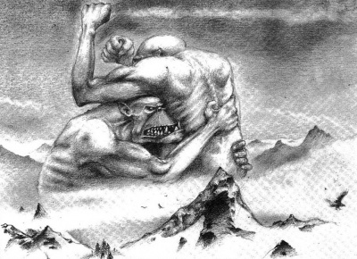

Testfelépítés
The structure and design of the Ork body provide a strong, tough and resilient system but also running at a low level of complexity. These combine to show that Orks are genetically engineered for combat. Their muscles are extremely strong and their squat bodies can stand immense punishment.

Ghazghkull Mag Uruk Thraka
Ghazghkull Mag Uruk Thraka, also known as the Prophet of the WAAAGH! and the Beast of Armageddon, is a powerful Ork warlord and an antagonist from Warhammer 40,000. He is an infamous individual for to his actions in the second and third Armageddon Wars and is considered extremely megalomaniacal, even for an Ork, convinced he is blessed by the Ork Gods themselves.

Gork and Mork
The difference between the twin Greenskin Gods is simple: Gork is brutal but cunning, while Mork is cunning but brutal. To make this comprehensible, one has to think like an Ork (a debatable proposition at best); Mork hits you when you aren't looking and Gork hits you even harder when you are. Like their own species, the Greenskins believe that when facing the Gods of the other intelligent races of the galaxy their deities can be defeated but never entirely extinguished; like the Orks themselves, they will always come back, spoiling for the next fight.
